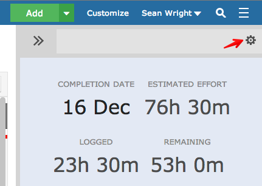
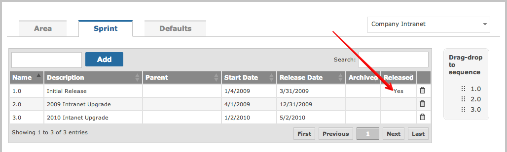
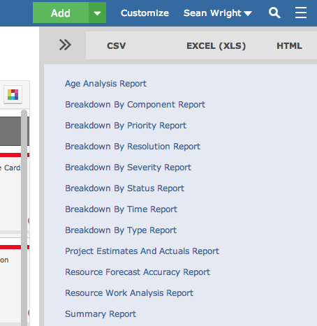

The side bar can be configured to show estimates and actual time logs to see how the team performed.

NoteEnsure you mark your sprint as released in order for it to appear on the changelog:

You can also access pre-defined reports to help you analyze the team and work breakdown.
